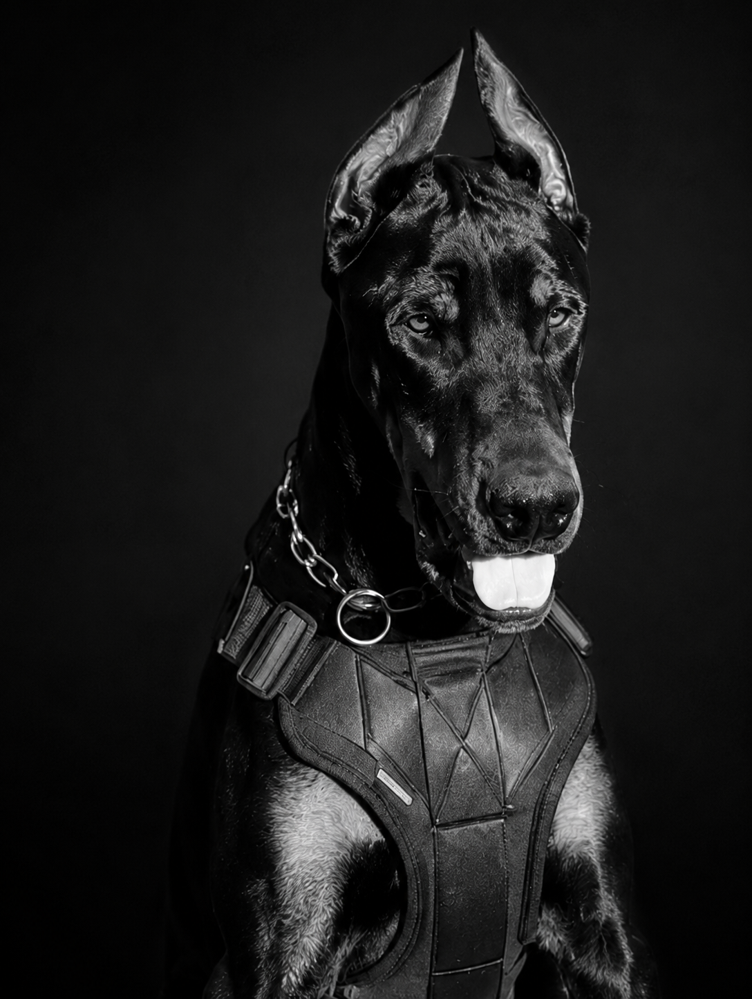

Daemon
Denzel B.K.V.B. · Macho · Preto e Castanho
Ver perfilConheça os cães apresentados pelo Canil LRD.

Denzel B.K.V.B. · Macho · Preto e Castanho
Ver perfilNovos perfis serão adicionados conforme o plantel for apresentado.